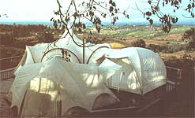
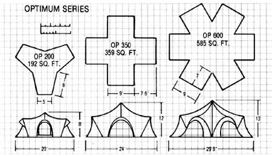
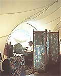

For a tent, it's expensive. On the other hand, it'd be difficult to find such a big, beautiful, unusual dwelling for twice the price. There are other advantages, too, when you opt for ...
They laughed when I told them I was going to quit my job at the New York Times and live in a tent in California. And I must admit that I, too, snickered a bit when my wife, Karen, first suggested the idea after falling in love with a picture of an exotic fabric home she'd seen in a magazine. But here we are, some two years later, delightfully ensconced in a cotton-canvas tent that looks as if it came out of the Arabian Nights, and feeling not the least bit sorry that we've left a more conventional lifestyle far behind!
PARTON'S FOLLY
The fact that my western-born spouse hated city life and owned a beautiful piece of property not far from the Pacific Coast had something to do with our decision, of course. As for me, though, I was New York-born and-bred and accustomed to the finer things that a $50,000-a-year job can bring. What ultimately changed my stubborn mind was seeing the surprisingly functional and beautiful tent itself. What's more, now that some of my old reporter pals have visited us at "Parton's Folly," they're probably not laughing much back in New York, either!
Nowadays, in fact, I often wonder why more people in mild climates don't take advantage of what today's imaginative fabric homes have to offer. Not only are they versatile, portable, economical, and exciting in the freedom they provide, but they also retain the original ambience that campers have found irresistible for centuries: a combination of romance and practicality. How ironic that a city boy has become a virtual pioneer in the field of canvas living!
It must have been quite a shock for our friends back East to see us take off on a 3,000-mile move, carrying our home in the back of our car. (Packed dry and properly folded, our main tent, which covers about 850 square feet, can be stored in a pair of washer/dryer cartons that easily fit into the back of a station wagon.) And a similar surprise awaited our new friends on the Coast, who-upon the arrival of a huge moving van on our conspicuously undeveloped property-asked in bewilderment, "Where are you going to put all that stuff ?"
In two hours, though, that question was answered. Four of us (two people could have done the job) erected the double-walled structure by following a single page of step-by-step instructions.
Chosen from the Optimum series manufactured by Moss Tent Works, Inc. (P.O. Box 309, Camden, ME 04843), our new home consisted of an Optimum 600 ...an Optimum 200 ...and a custom-made, ten-foot-square tent we use for a bathroom, all purchased for a price that came to under $10,000.
The Optimum 600 includes six 9' X 7' alcoves, which-with partitions-we turned into a kitchen, two studies, a den, a dining area, and a sewing room, while the Optimum 200 became a bedroom large enough to house our queen-size bed, two bureaus, and an open closet suitable for all our clothes. The tents connect (via doorways and canopies) and are wired for electricity and telephone, plumbed for hot and cold running water, and joined to a fully approved septic system. (Who said tenting means roughing it?)
QUESTIONS AND ANSWERS
There's more, of course, to all this than meets the eye. Before the big move, we contracted with a local builder to construct a redwood deck for the tent to rest on, because if you're going to live in a fabric dwelling permanently, you want something firmer, smoother, and drier than bare earth. Also, since the land had never been developed, we needed an access way (we're a quarter-mile from the nearest road), a well and storage tank, a generator (until we got power), a septic system (which required perc tests, bulldozing, and health department inspections), and a building permit. We arranged for all of these in advance except for the building permit.
Once the tent was erected, we were the talk of the neighborhood. Everyone within eyeshot of our unique abode immediately loved it. But, oh, there were questions! And many of them were probably the same ones you're asking. If so, here are some of the answers.
First of all, the tent's material is 100% cotton canvas. This is-we've found-an ideal fabric for year-round tent living, because on rainy days the fibers swell to close up the material's tiny pores, thus making our home waterproof. When the fabric's dry, however, the pores remain open to allow moisture vapor to pass through the walls, providing "breathability." If it weren't for this factor, tent inhabitants would soon find moisture condensing in tiny droplets, as usually occurs in shelters made of synthetic material. Of course, canvas isn't as light as nylon or the acrylics, which are great for backpackers and the like, but if you don't plan to keep on the move, weight isn't much of a consideration.
Cotton is also better adapted to withstand weather exposure and the sun's rays than are the synthetics. In fact, the six acrylic sleeves holding our home's aluminum framing rotted out after one year and had to be replaced with sailcloth. Also not to be overlooked is cotton's translucency. The sunlight filtering into the tent during the day and the glow of our outdoor incandescent lights at night provide a restful illumination.
Being double-walled (one tent is erected over another, with an air space between), the structure has a degree of natural insulation. This keeps the inside cool during the heat of summer and in cooler weather holds the warmth from a wood stove or kerosene heater quite well.
As for susceptibility to storm damage, the curved framework of aluminum utilizes a tensioned membrane to distribute stress throughout the tents, so there are no flat surfaces, sharp edges, or corners to catch the wind. During the terrible winter of '83, for example, when numerous homes around us were shifting and sliding in the mud and heavy winds, we found our complex of fabric dwellings to be secure and firmly entrenched, even when blasted by a 70-mile-an-hour gust.
Though our tents are bolted to the deck, as well as tied down to the platform at numerous points around the perimeter, additional security is provided by the weight of the furniture and several layers of rugs that fill the interior. Since the nylon flooring is sewn tightly to the canvas sides, each tent is a solid package ...with the exception of the bathroom tent.
It was Karen's clever idea to ask that the 100-square-foot "commode" tent be made without a floor. She realized that, unlike the other units, which needed only a few holes for electric outlets and water pipes, the bathroom tent floor would need all sorts of piercings. So after the toilet, sink, bathtub, shower, and washing machine were installed, with their connections running down through the deck, we bought an indoor/outdoor carpet and cut it to fit the bathroom floor. We fastened the walls to the deck with vinyl stripping, then nailed that down and caulked it to prevent water from intruding. Finally, where the interior walls meet the floor, we ran a 50-foot snakelike sleeve filled with sand to keep out drafts. Interestingly enough, the bathroom has proved to be the driest of all our tents.
AND A FEW DISADVANTAGES
As helpful as our manufacturer has been to us (after all, we're serving as guinea pigs in this project), there have been some things that have gone wrong. The worst of those, which drove Karen absolutely nuts, were water leaks through the seams and zippers. Faced with a winter that produced over 60 inches of rain in our area, we weren't exactly thrilled to learn that we, not the tentmaker, were responsible for sealing all of the seams and zippers. Thus, on the few nonrainy days she could find, Karen armed herself with Thompson's Water Seal and spent hours brushing the liquid over the myriad lines of stitching.
Dust and dirt also proved to be problematical. At first, there was a lot of bare earth around. The wind tended to kick it up, and we stirred it ourselves in the process of coming and going. Furthermore, the canvas picked up a number of dirt marks when we set the tents up. (Next time, we plan to do it barefoot!) There are still footprints on the walls, both ours and the manufacturer's.
On top of that, while the plumber was installing the kitchen sink, he accidentally punched a hole in the tent's wall, which made us realize how thin and fragile our tent really is, and how easily it can be torn by any sharp instrument. On occasion we've felt as though we were trying to live in an eggshell, which is fine, as long as no one drops the egg. [EDITOR'S NOTE: This being the case, MOTHER questioned the author about home security in a tent. Mr. Keese pointed out that a determined burglar could just as easily break a window or cut a screen to get into a conventional house. And the Keeses have had no such problem during their two years in the tent. "We don't keep anything more valuable than a television set here, " Parton said. "Anyway, if you live in something as simple as a tent, you come to feel that potential thieves are likely to seek more prosperous-looking hunting grounds."]
Then there were the cats, of which we have six. Whether inside or outside, they loved to leap up on the fine-mesh netting that serves as windows. In no time, tiny claw holes began appearing, and we were forced to teach the felines to chase flies somewhere else. And speaking of windows, we were provided with clear plastic panes for the winter, but though they were supposed to attach with Velcro self-adhering fasteners, not all of them could be stretched to fit. There always seemed to be a gap through which water could seep in.
The zippers, too, were a constant concern, since-through regular use-they began to break down. When it was the slightest bit damp, for instance, the fabric swelled and put so much stress on the screens that we felt the zippers would burst when forced. In fact, some did, and Moss Tent Works agreed that there must be a better solution for permanent dwellers. (That solution was Velcro, plus a larger cover for the entryway.)
IN SUMMARY. . .
It's true that some people, hearing how-and in what-we live, immediately harp upon the supposed discomforts. They're wrong, though, because we've found we're seldom uncomfortable. At the end of the day, when everyone else's house is hot and stale, our fabric home is as cool and as sweetly scented as the evening outside. When the sun comes up, the inside of the tent is like an impressionist painting. When the moon is full, the canvas walls glow, and the stars shine right through our house. We're snugly warm and dry in rain or wind, and-best of all-we feel far closer to the natural world around us than we ever could in a conventional home.
|
 |
 |
 |